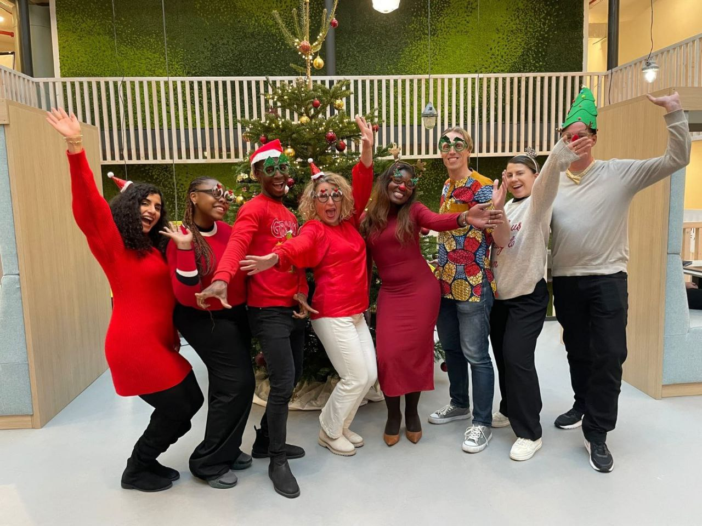
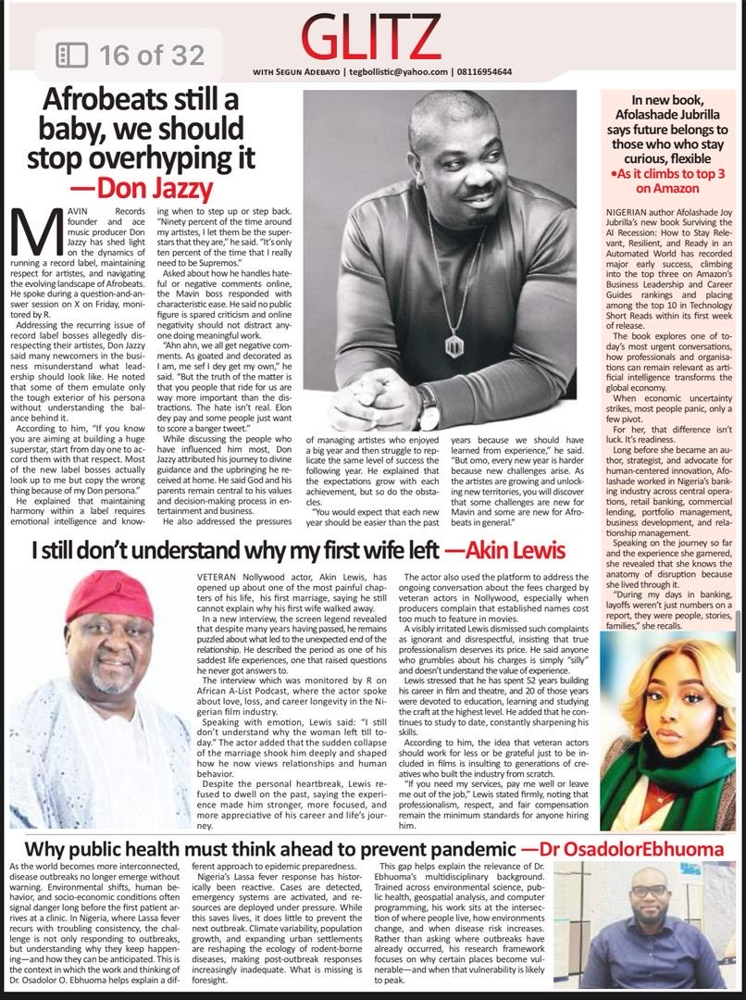
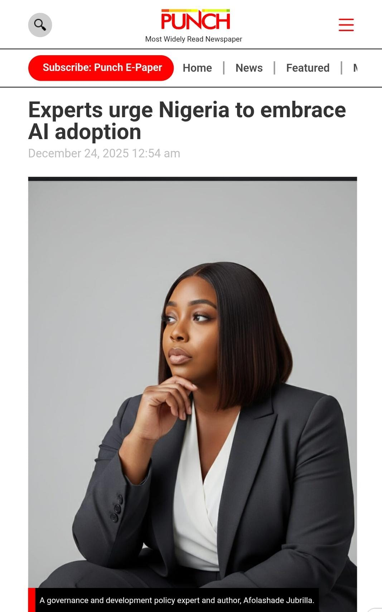
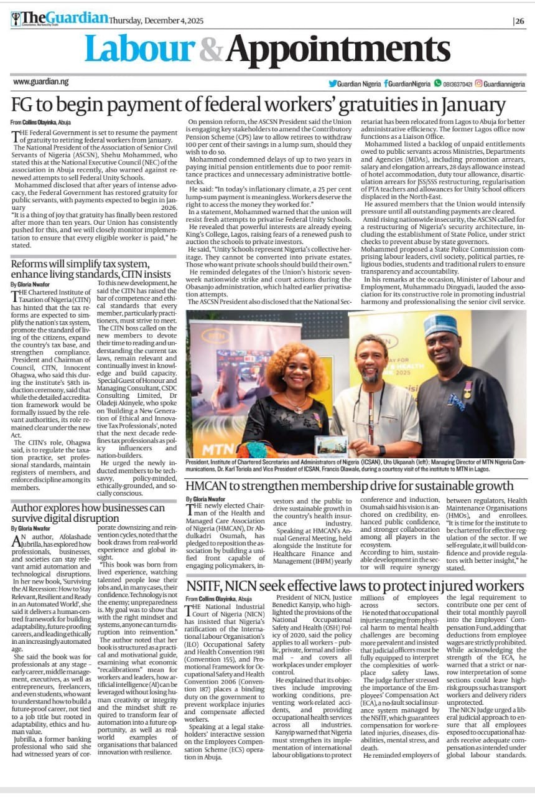

Work · Research · Press
My
Portfolio.
Experience across compliance, operations, and governance research — with measurable outcomes at every stage.
10+ years.
Three sectors.
One through-line.
Education
Tools & Technologies
- Evaluating large language model outputs for data leakage, prompt injection, and adversarial behaviour to ensure enterprise-grade model safety.
- Authoring technical assessments directly supporting human oversight and cybersecurity requirements under the EU AI Act.
- Identifying and documenting model vulnerabilities that pose risks to enterprise deployments in regulated industries.
- Contributing to evaluation frameworks that inform model safety standards and deployment protocols.
- Supported compliance with EU Passenger Rights Regulation (EU 2021/782) across operational and customer-facing processes, translating regulatory requirements into work instructions and standard operating procedures.
- Cleared a backlog of 2,000+ claims by introducing documentation validation steps that improved completeness and clarity across the claims pipeline.
- Drove cross-functional collaboration between claims, operations, and finance teams, sustaining high service quality under pressure.
- Translated EU regulatory requirements into actionable SOPs accessible to non-specialist team members.

- Led 23 analysts conducting KYC/AML due diligence, achieving a 95% accuracy rate and earning two Service Champion awards for operational excellence.
- Reduced onboarding turnaround time from 24 hours to 30 minutes through rejection-pattern analysis and systematic process redesign.
- Developed unified documentation checklists with Compliance and Internal Control teams, cutting first-pass rejection rates by 60%.
- Created the Compliance Clarity Hub — a regulatory knowledge base that reduced repetitive queries and significantly improved team audit readiness.
Published Work
Writing that
moves the field.
A strategic guide for professionals navigating automation, layoffs, and digital transformation. Rated Top 3 on Amazon in its category. Available globally in print and digital formats.
Proposes an integrated framework combining causal AI, generative AI, and agent-based AI to better align artificial intelligence with economic reasoning and policy evaluation. Co-authored; Jubrilla affiliation: ISS, Erasmus University.
Examines the growing role of AI in microgrid operations, with a focus on cybersecurity vulnerabilities, adversarial robustness, and governance mechanisms for critical infrastructure.
Explores how data-rich environments have transformed executive decision-making by embedding real-time dashboards and risk analytics into institutional governance structures.
How community leadership and frugal innovation can expand access to education in flood-prone settlements, and how to build durability and ownership into future urban projects.
Why fair processes and representation matter. A practical case for opening democratic participation and protecting equal opportunity within party systems.
Press & Media Coverage
Featured in
Nigeria's leading press.
Interviews, expert commentary, and feature articles across governance, AI adoption, and workforce resilience.

Feature article exploring strategies for organisations navigating digital disruption, automation, and the evolving role of leadership.
Read Article →
Tribune feature on the book's core thesis — that curiosity and adaptability, not credentials, define relevance in the AI era.
Read Article →
As AI Futures and Governance Reform Advocate, Afolashade Jubrilla calls for coordinated national AI strategy across fintech, healthcare, agriculture, and infrastructure.
Read Article →
"Certificates alone no longer guarantee employability, and longevity in a role no longer guarantees relevance. What matters is the ability to think critically, adapt quickly and work alongside intelligent systems."
Read Article →
Raises concerns over Nigeria's outdated education system and the urgent need for future-ready skills frameworks aligned with digital economic realities.
Read Article →
Syndicated feature highlighting insights into resilience, governance frameworks, and navigating digital transformation at the institutional level.
Read Article →GRC Solution Case Studies
Real results.
Measurable impact.
Strategic governance, risk, and compliance projects delivering quantifiable outcomes across critical infrastructure and enterprise security.
Trustworthy AI Infrastructure & EU AI Act Alignment
THE PROBLEM
AI controllers in critical infrastructure create efficiency gains but introduce a critical Trust Gap through False Data Injection (FDI) vulnerabilities — capable of triggering physical failure in cyber-physical systems.
STRATEGIC ACTION
Evaluated cyber-physical security boundaries through Article 15 of the EU AI Act. Mapped a five-layer defence model across Physical, Sensing, Communication, Control, and Operator layers to identify adversarial corruption entry points.
MEASURABLE OUTCOME
Developed a blueprint for mandatory conformity assessments ensuring technical documentation meets EU robustness and cybersecurity requirements for High-Risk AI systems — directly applicable to energy, transport, and finance sectors.
Strategic Enterprise Risk Audit: NIST CSF & NIS2 Gap Analysis
THE PROBLEM
Critical misalignment between technical data handling practices and mandatory EU legal frameworks — specifically GDPR, NIS2, and DORA — creating unquantified risk exposure at board level.
STRATEGIC ACTION
Led a full-scope audit mapping technical vulnerabilities to NIST CSF core functions. Identified critical PII encryption gaps and unauthorised lateral network movement as priority remediation targets.
MEASURABLE OUTCOME
Engineered a prioritised Information Security Risk Heat Map enabling stakeholders to visualise risk appetite versus exposure — securing executive sign-off for AES-256 encryption deployment roadmap.
Automated Access Governance Engine (Python)
THE PROBLEM
Manual ACL management processes causing Privilege Creep, significant audit friction, and NIS2 non-compliance risk across data-rich server environments with dynamic IP populations.
STRATEGIC ACTION
Engineered a Python-based automation engine enforcing Principle of Least Privilege. The script programmatically audits, flags, and purges decommissioned IP addresses from restricted server access files.
MEASURABLE OUTCOME
95% reduction in manual audit overhead. Real-time compliance enforcement with internal data access policies and NIS2 access control requirements — continuously validated without human intervention.
Forensic Incident Response & Protocol Recovery
THE PROBLEM
Service failures on Port 53 (DNS) during high-volume SYN flood attacks, degrading TCP three-way handshake integrity and threatening operational availability across the infrastructure perimeter.
STRATEGIC ACTION
Performed deep packet inspection using tcpdump. Conducted systematic protocol disruption analysis of the TCP handshake sequence under load, isolating the attack vector from legitimate traffic signatures.
MEASURABLE OUTCOME
Authored the formal Incident Post-Mortem and firewall reconfiguration strategy. Restored full system availability within strict Recovery Time Objectives — post-mortem adopted as org-wide incident response template.